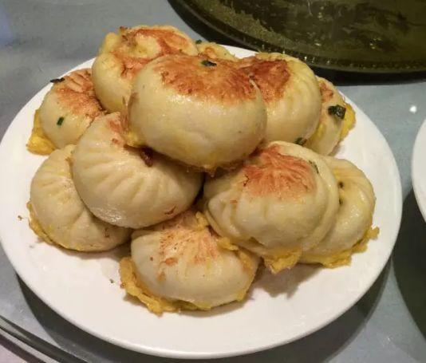
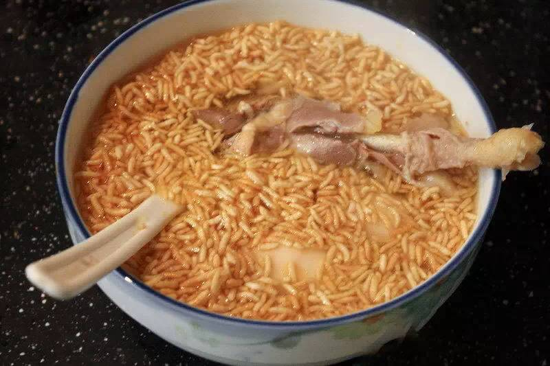
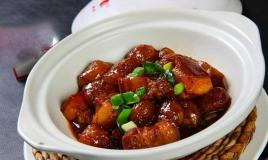

A Bite of Anqing
For countless people from other places, hometown cuisine is no longer a simple dish or a few dishes, but more emotional bond, spiritual sustenance. So today let's enjoy the tip of the tongue of Anqing!
For countless people from other places, hometown cuisine is no longer a simple dish or a few dishes, but more emotional bond, spiritual sustenance. So today let's enjoy the tip of the tongue of Anqing!
|  |
Big South Gate beef stuffed bunAnqing's signature breakfast halal beef bun is a large, tender fried bun that differs from the smaller Shanghai version. The appearance is golden yellow, the skin is crispy and tender inside. The skin is crispy and delicious after being fried. It can arouse people's appetite just by looking at it. |
The average price：two yuan each |
|  |
Fried rice in chicken soupServe a bowl of hot and fragrant chicken soup and sprinkle a handful of fried rice. Do not wait for the fried rice to melt, scoop up with a spoon and taste slowly. This dish of fried rice soaked in chicken soup is simple and unsophisticated, but it contains countless hometown flavor, which makes countless Anqing people in other places dream about it. |
The average price：66 yuan a bowl |
|  |
Roasted pork with sweet potato flour and ballsThe e braised pork with yam flour is a traditional local dish in Anqing, Anhui Province. It tastes sticky but not thick, oily but not greasy, crispy and delicious. |
The average price：40 yuan a plate |